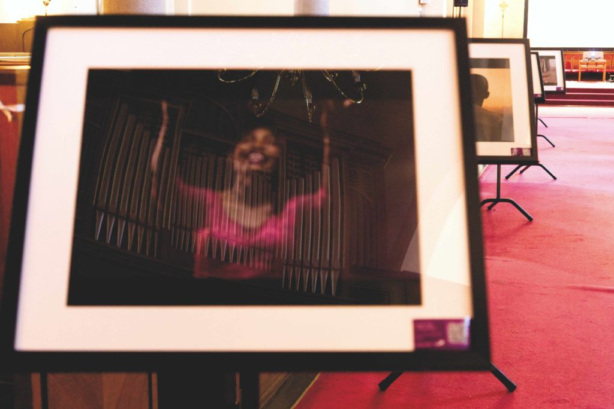

SEPTEMBER, 21, 2021
Refugee|ni|us Exhibition: Celebrating Artists from Refugee communities

- words by Ka Man Mak
For the past decade, the word ‘refugee’ conjures negative connotations of being a threat or victim of war. However, refugees are human beings just like anyone else who dream to thrive in life. A two-part Refugee|ni|us exhibition that was set at two locations under Oslo Afro Arts Festival in August played an important role in platforming music and art from refugee and former refugee artists that Oslo residents had gotten to enjoy. The Refugee|ni|us exhibition is an international collaboration between Oslo-based curator Khalid Shatta; exhibit producer and cultural psychologist Mona Frank; Oslo Afro Arts Festival, and Octopizzo Foundation. The initiator of the exhibition, Mona Frank is originally from Germany and have lived in Norway for the past three years studying social anthropology. She found music videos produced by Octopizzo for the Refugeenius project and thought that they were amazing, “I thought it’s a shame that only few people know about them. It’s out there. The artists were easily accessible. […] So, for me it became really important to create a platform where this art can be shown and working with Khalid Shatta who is an amazing artist, incredibly talented, and was incredibly helpful in making this project happen. The project became like a baby for me. It’s so great to see it happen. I think it is important to try those things despite the pandemic and the circumstances we live in; to find ways to showcase art and to make it more accessible and more known.”
Mona Frank, Exhibit Producer and cultural psychologist. Photo: Ka Man Mak
First Part – “Migration of the Soul” Paintings
The first part of the exhibition title “Migration of the Soul” featured Sudanese painter, Khalid Shatta’s large canvas paintings and sketches at Kunsthall Oslo. Shatta was not referring to physical migration when discussing the theme for his paintings, but rather the sensation of being out of place and questioning spiritual belonging. In so doing, he highlights how our mental state, like memories, stress, trauma, and depression can prevent us from utilising our full potential and enjoying the beautiful aspects of the world. Weaving into his paintings are motifs that are deeply symbolic and represented deep cultural meanings anchored in his inspirations from ancient civilisation and his birthplace Sudan – its history and culture. The technique and style drew upon modernist painters, such as Hussein Gamaan, Kerry James Marshall, Jean-Michel Basquiat, Paul Klee, as well as photographers like Malick Sidibé, Seydou Keïta and Gordon Parks. “I hope that one day, people will see and heal themselves through my art,” said Khalid Shatta, who saw art saving him. “I am trying to create a safe space where they can feel calm. I don’t want them to think that I created all these beautiful paintings. But I need them to question themselves. Why are we here? Because it is important. Who you are? What is your purpose in life? Because we are all a part of history. We are making history. Everyone can try to write their name in history. You can be the worse one or the good one.”
Second Part – Refugee|ni|us – Refugee, genius, us
The second part of the exhibition titled, “Refugee, genius, us” was featured at Grønland Kirke (translate: Grønland Church) where a selection of Khalid Shatta’s paintings and audiovisual materials by musicians living in refugee camps in Kenya were displayed. The title of this exhibition paid homage to the music album “Refugeenius” which was produced by Octopizzo in collaboration with numerous refugee artists from the Demoncratic Republic of Congo, Ethiopia, Burundi, Uganda, Somalia and South Sudan. The album was part of the “Artists for Refugees” project that was run by UNHCR Kenya and the Octopizzo Foundation. Along the nave of the church was lined up of photographs, leading up to a big screen where music videos were played on repeat. QR codes were found on the photographs and the exhibition’s roll-ups were near the entrance. The QR codes sent the curious to more information about Octopizzo Foundation and the information of the musicians. The photographs that were showcased in the exhibition were available for purchase. The sales of photographs will be donated to the programs of the Octopizzo Foundation which empower youth in slums and refugee camps in Kenya through music, arts, creativity, and sports. For more than two years, Octopizzo worked with over 300 artists to produce songs and music videos. The aim of “Refugeenius” project was to nurture the talent that exists in refugee camps and to mentor youth, so that they can attain sustainable livelihoods through their talents. “I want them to realize that these are real human beings who bring more to the table than anybody would ever think […] Opportunity changes everything […] When you don’t treat them like a problem, and when you don’t judge them based on their countries or what happened to them, they’re the most normal human beings. They might be you in another world, and they want the same thing, whether in the camps or the slums, they want to be happy, have their own house, have a family, they want to go to a movie and they like the same music. This is what I want this side of the world to see when watching some of the materials the kids did, realizing who they are, and stop thinking that they’re are messing the place or taking over our jobs. We have an ecosystem that sustains itself so let those kids evolve, travel and get their chances.”
Enriching Society Through Talent
Mona Frank said, “We need to stop being bound by fear. And we need to start seeing the beauty and richness of people who come here.” In light of the recent takeover of Afghanistan by the Taliban and the Norwegian general election, she believed that the topic of refugees won’t go away and refugees should be seen as enriching society through their talents and not as a financial burden. The exhibition was the answer to that by showcasing talented people and how society can benefit from having them here.
This article is part of a journal series produced by The Oslo Desk in collaboration with Oslo Afro Arts Festival.